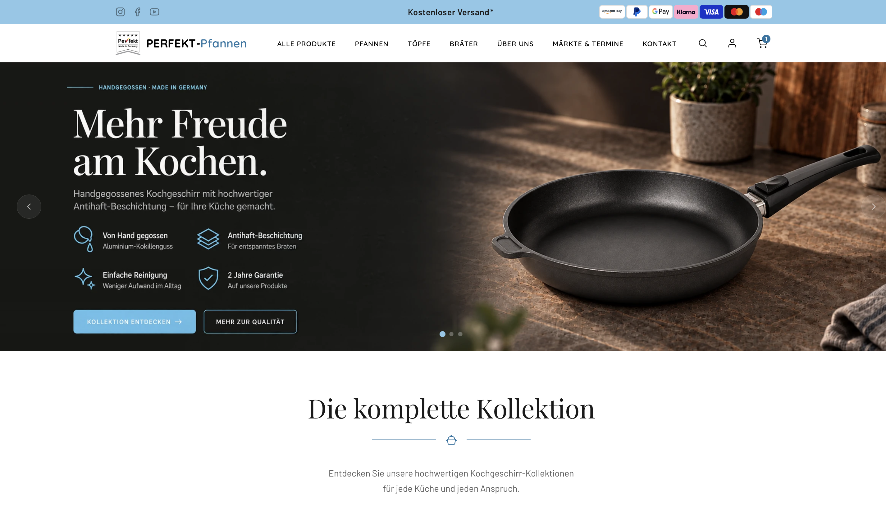

Ein Onlineshop, den wir umgesetzt haben.
Klare Struktur. Übersichtliche Produkte. Auf jedem Gerät.

Projektumfang
Was wir umgesetzt haben.
Von der Gestaltung bis zu automatisierten Abläufen.
-
Shop-Aufbau
Konzeption und Umsetzung eines modernen Onlineshops für Kochgeschirr.
-
Produktseiten
Klare Produktinformationen und eine übersichtliche Darstellung des Sortiments.
-
Mobile Ansicht
Optimierte Darstellung und einfache Bedienung auf Smartphones.
-
Suchmaschinenoptimierung
Struktur, Inhalte und technische Grundlagen für eine bessere Auffindbarkeit.
-
Zielgruppenanalyse
Kundengruppen und Bedürfnisse als Grundlage für Inhalte und Ansprache.
-
Nutzerführung & Kaufprozess
Vom passenden Produkt bis zum unkomplizierten Bestellabschluss.
-
E-Mail-Marketing
Automatisierte Informationen zu Angeboten und neuen Produkten für angemeldete Kunden.
-
Shop-Automatisierung
Automatisierte Abläufe für wiederkehrende Aufgaben und Kundenkommunikation.
Vom ersten Eindruck bis zur Produktauswahl.
1 / 4